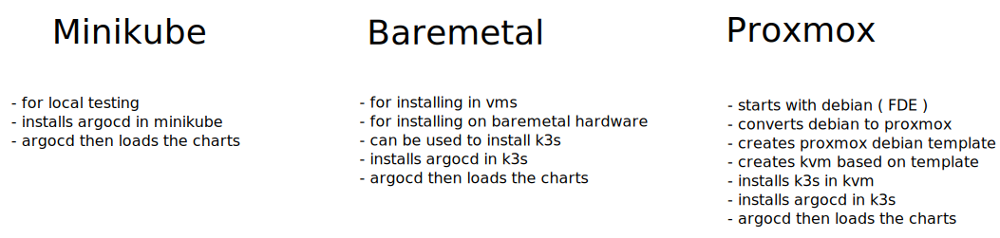

Index¶
Three choices¶

show me de wey!¶
1. Read this introduction¶
2. Gitops/Argocd Concept¶
chapter 02 - gitops & argocd concepts
3. Installation of debian 11 with full disk encryption¶
chapter 04 - installation of debian FDE
4. Clone loeken/homelab github repo in your account¶
chapter 03 - github repository
5. Installation Overview¶
chapter 05 - installation overview
6. Installation of homelab with Proxmox with nginx¶
chapter 06 - beelink way - nginx ingress
7. Installation of homelab with Proxmox with cloudflare tunnels¶
chapter 07 - beelink way - cloudflare tunnels
The stack from bottom to top¶
These are all the apps that are part of this repo and can be installed via the ./setup util. It can either be installed in baremetal debian, in proxmox ( setup converts debian to proxmox & creates templates/kvms ). This allows intalling debian with FullDiskEncryption :luc_lock: easily with the debian installer.
| Name | Type | Description | Optional |
|---|---|---|---|
| Proxmox | Operating System | Allows running KVMs, ships with Webui | yes |
| Debian 11 | Template | Template for Proxmox KVMs | yes |
| KVM | Virtual Machine | A virtual machine ( KVM ) in Proxmox | yes |
| k3s | Kubernetes Distribution | For self hosting Kubernetes | yes |
| Minikube | Kubernetes Distribution | Alternative to Baremetal/Proxmox | yes |
| Argocd | Kubernetes Application | Declarative Githubs CD | no |
| Bootstrap Core apps | Argocd App of Apps | Used to load required Kubernetes Applications | no |
| Bootstrap Optional apps | Argocd App of Apps | Used to load required Kubernetes Applications | no |
| Sealed Secrets | Kubernetes Application | Encryption of all application credentials | no |
| Cert Manager | Kubernetes Application | X.509 certificate controller ( letsencrypt ) | no |
| Import Sealed Secrets | Kubernetes Application | a helm chart to import stored sealed secrets | no |
| Authelia | Kubernetes Application | SingleSignOn Multi-Factor portal | no |
| Cloudflare Tunnels | Ingress | Alternative ingress using cloudflare tunnels | no |
| Democractic CSI | Kubernetes Application | Storage class for iscsi/nfs works with truenas | no |
| External DNS | Kubernetes Application | For updating DNS records such as cloudflare | no |
| Home Assistant | Kubernetes Application | Open source home automation. Privacy focussed | no |
| Jellyfin | Kubernetes Application | Software for streaming videos | no |
| Jellyseerr | Kubernetes Application | Portal for managing download requests | no |
| Kasten K10 | Kubernetes Application | Backup & Restore, DR and offsite - backblaze b2 | no |
| Loki | Kubernetes Application | Grafana & Loki, loads dashboards for linkerd | no |
| Nextcloud | Kubernetes Application | Self hosted Dropbox, apps for ios/android | no |
| NFS Provisioner | Kubernetes Application | NFS provisioner for local-path for shared-media | no |
| NGINX Ingress | Ingress | Main recommended Ingress controller | no |
| Nzbget | Kubernetes Application | Usenet Downloader | no |
| Prowlarr | Kubernetes Application | Indexer for Usenet/Torrent Trackers | no |
| Radarr | Kubernetes Application | Movie Collection Manager for Usenet/Torrents | no |
| Sonarr | Kubernetes Application | TV Collection Manager for Usenet/Torrents | no |
| Vaultwarden | Kubernetes Application | Rust based bitwarden, Password Manager | no |
| Volume Snapshots | Helm Chart | Adds snapshot support for democratic-csi | no |
| Whoami | Kubernetes Application | a simple go app to display http requests/headers | no |